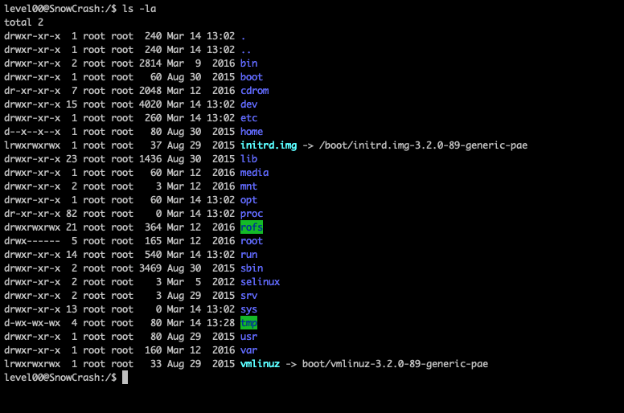

aller a la racine de la vm pour voir ce qu'il y a :
commande : cd /
regarder les doits sur chaques dossiers :
commande : ls -la
regarder le fichier /etc/passwd :
commande : cat /etc/passwd
On peut voir qu'il y a un mot de passe au niveau du password de flag01 cela veut dire qu'il est crypté par le fonction crypt d'ubuntu
installer un nouvel OS
Télécharger kali linux ou ubuntu ou debian (a votre choix) et l'installer sur virtualbox
kali linux
ubuntu
debian
installer john the ripper
commande : apt-get install john
copier le fichier /etc/passwd sur le nouvel OS
commande : scp -P 4242 level01@ip:/etc/passwd .
Cracker le mot de passe
commande : john -user=flag01 ./passwd
Tester le mot de passe trouve
mot de passe : abcdefg
Recuperer le flag
getflag